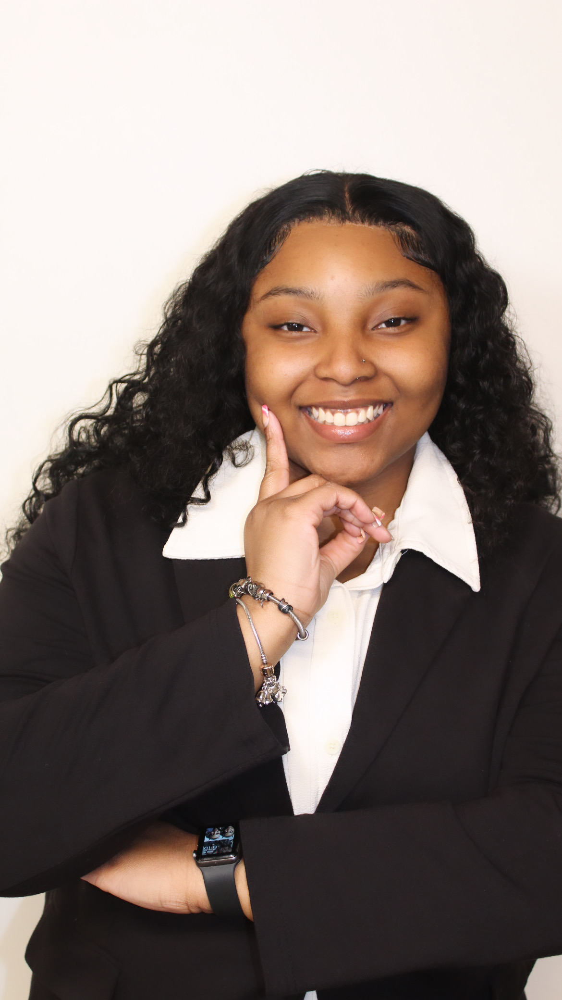

Welcome!
I'm Kianna Burns, a beginner web developer.
Learn MoreAbout
Born in Augusta, Georgia, on May 19, 2004, Kianna Burns is a quiet yet outgoing girl determined to achieve all her goals and make her family proud. She was born into a single-parent household to Shakana Burns. Her mother was a young mom, so it felt like they did a lot of growing up together. Kianna has one sister who is a year younger. Kianna moved around a lot when she was younger. Therefore, it was rare for her to get used to the schools that Kianna attended. When she moved to Fayetteville, Georgia, she stayed there until she graduated high school. Burns is on a challenging journey to become a Software Engineer. She will be a first-generation graduate after graduating from the Florida Agricultural and Mechanical University. After graduating, she plans to attend graduate to further her education in Information Technology. When it comes to accomplishments, we can look at personal ones, such as graduating high school. It is not common for people of Burns family to make it past high school, which makes college such a massive opportunity for her. She has not made much impact yet, but this is only the beginning. Growing up, many things interested Kianna. She has played the viola for almost a decade. She also played softball and was on the step team in high school. Currently, Kianna has been putting her focus and energy into programming. Growing up, she has always felt overlooked and insignificant, so she aspires to change that and be one of the best in her field.
Skills
- HTML
- CSS
- JavaScript
- Microsoft Office
Projects
| Project Name | Decription |
|---|---|
| Portfolio Website | A website with information about my career goals. |
| Scheduling Site | A platform use to schedule appointments. |
Contact
Email: knburns04@gmail.com
Phone: (770) 490-9816